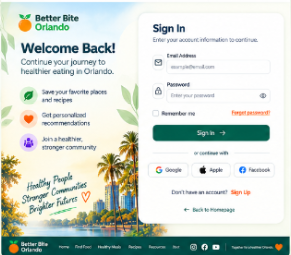
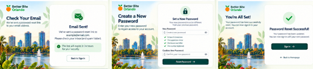
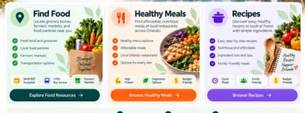
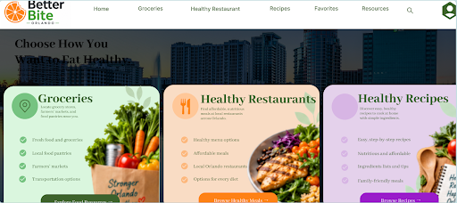
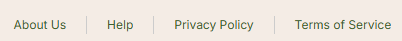
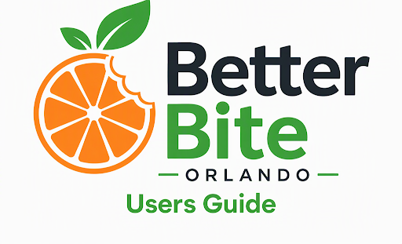

User Guide
Version 1.0
Last Updated: November 8, 2026
Table of Contents
Introduction
At Better Bites Orlando, we strive to help individuals and families make healthier lifestyle choices in Central Florida. This User Guide is designed to help you navigate the site and app, taking full advantage of its features. We provide access to reliable nutrition information, meal planning tools, healthy recipes, and local wellness resources. Whether you are searching for healthy food options, exploring community resources, or personalizing your account preferences. This guide will walk you through each step of using Better Bites Orlando.
1. Account Login & Registration

Existing User Login
- Open the Better Bite Orlando website.
- Select Sign In.
- Enter your email address.
- Enter your password.
- Click Sign In.
New User Registration
- Select Sign Up.
- Create a username.
- Create a password.
- Enter your email address.
- Enter your ZIP Code.
- Accept the Terms and Conditions.
- Select Create Account.
2. Forgot Password

- Select Forgot Password.
- Enter your registered email address.
- Select Submit.
- Follow the password reset instructions sent to your email.
Password reset links expire after 15 minutes.
3. Homepage Features

The homepage provides access to all Better Bite Orlando resources and nutrition tools.
- Healthy grocery stores and food resources
- Healthy restaurant recommendations
- Nutritious recipe collections
- Community wellness information
4. Main Navigation
The main navigation bar appears at the top of every page and provides quick access to all key areas of the website.
- Home - Return to the homepage.
- Groceries - Find grocery stores and food resources.
- Healthy Restaurants - Browse local healthy dining options.
- Recipes - Discover healthy recipes.
- Favorites - Save preferred resources and locations.
- Resources - Access health and nutrition information.
- Profile - Manage account settings and preferences.

5. Footer Navigation
The footer contains additional navigation links and important website information.
- About Us
- Help
- Privacy Policy
- Terms of Service

6. Troubleshooting
| Problem | Solution |
|---|---|
| Unable to Sign In | Verify the email address and password entered. |
| Verification Email Not Received | Check Spam or Junk Mail folders. |
| Password Reset Link Expired | Request a new password reset email. |
| Account Access Problems | Contact support at info@betterbiteorlando.com. |
7. Frequently Asked Questions
Do I need an account?
Some features are available without signing in. An account is required for saved favorites and personalized recommendations.
How do I reset my password?
Select the Forgot Password option and follow the instructions provided in the password reset email.
Can I save restaurants and recipes?
Yes. Saved items can be accessed through the Favorites section.
8. Conclusion
Thank you for using Better Bite Orlando. Our goal is to help individuals and families locate healthy food options to discover a new jouney. We make sre that all users have access to save nutritious recipes and trusted wellness resources throughout the Orlando community. By utilizing the tools available within the website, users can make informed food choices to develop healthier eating habits. The community can connect with valuable local resources that support overall well being. We encourage users to regularly explore new resources, save favorite locations and recipes to personalize their experience through their account settings.
